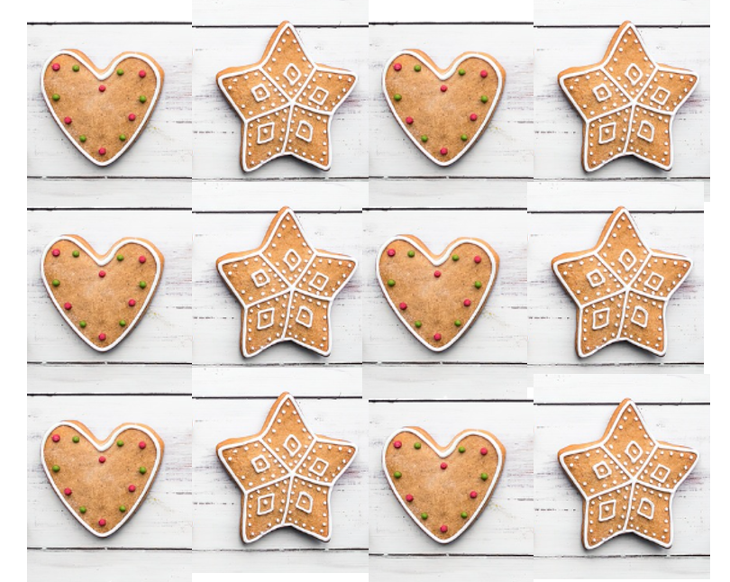
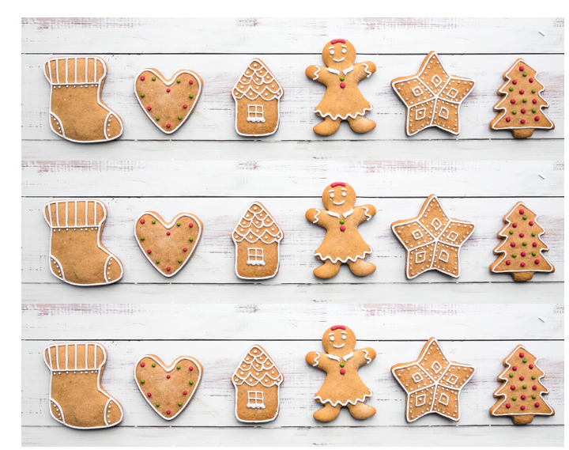

6 Control Structures
Conditional executions control the flow of the execution.
Conditional Statements and Loops in R
if-else: We use when we want to select between two (or more) options.for: We use when we want to repeat a block of code a fixed number of times, usually over a sequence.while: We use when we want to repeat a block of code as long as a condition is true.repeat: We use when we want to repeat a block of code indefinitely until we manually stop it (usually with break).break: We use when we want to exit a loop immediately.next: We use when we want to skip the current iteration of a loop and continue with the next one.switch: We use when we want to select one option from many possible choices, based on a value.
6.1 if-else
Teaching analogy
Draw a star on star-shaped cookies and draw a heart on heart-shaped cookies.
Syntax
In programming, we use if–else when we need to choose between two possible options:
The
ifblock executes when the condition is true.The
elseblock executes when the condition is false.
if (condition) {
# do something
} else {
# do something else
}Example
test_even_odd <- function(x){
if (x %% 2 == 0){
print("even number")
} else {
print("odd number")
}
}test_even_odd(5)[1] "odd number"test_even_odd(6)[1] "even number"6.2 vectorization with ifelse
ifelse is vectorized, meaning it works on entire vectors at once.
ifelse(condition, TRUE condition output, FALSE condition output)Example
test_even_odd_v2 <- function(x){
ifelse(x %% 2 == 0, "even number", "odd number")
}test_even_odd_v2(5)FALSE [1] "odd number"test_even_odd_v2(c(1,6))FALSE [1] "odd number" "even number"6.2.1 Difference between if-else and ifelse
if-else: Evaluates only on one value, not a whole vector.ifelse: A vectorized function. It checks the condition for every element in a vector and returns a result of the same length, applyingiforelseto each element individually.
if-else Example
test_even_odd <- function(x){
if (x %% 2 == 0) {
print("even number")
} else {
print("odd number")
}
}test_even_odd(5)FALSE [1] "odd number"test_even_odd(c(1,6))
# returns an errorifelse Example
test_even_odd_v2 <- function(x){
ifelse (x %% 2 == 0, "even number", "odd number")
}
test_even_odd_v2(5)FALSE [1] "odd number"test_even_odd_v2(c(1,6))FALSE [1] "odd number" "even number"6.3 if–elseif–else
Teaching analogy
If the cookie shape is;
star → draw a star;
if it’s heart → draw a heart;
if it’s Christmas tree → draw a tree;
if it’s shoe → draw a shoe;
if it’s house → draw a house;
else → draw a gingerbread man.

Syntax and example
We use if–elseif–else when we want to select one option from more than two possible options.
The first
ifcondition is checked.If it’s TRUE, that block runs, and the rest are skipped.
If it’s FALSE, the program checks the next elseif condition.
This continues until one condition is TRUE, or else the final else block runs (if provided).
if–elseif–else checks one condition after another.
grade_marks <- function(marks){
if (marks < 20) {
"D"
} else if (marks <= 50) {
"C"
} else if (marks <= 60) {
"B"
} else {
"A"
}
}
grade_marks(75)[1] "A"6.4 if
It is possible to use only if statement.
check.negative <- function(x){
if (x < 0 ) {
print("X is negative")
}
}check.negative(-10)[1] "X is negative"check.negative(10)6.5 for
For the first 50 cookies, fill the center of cookies with jam.